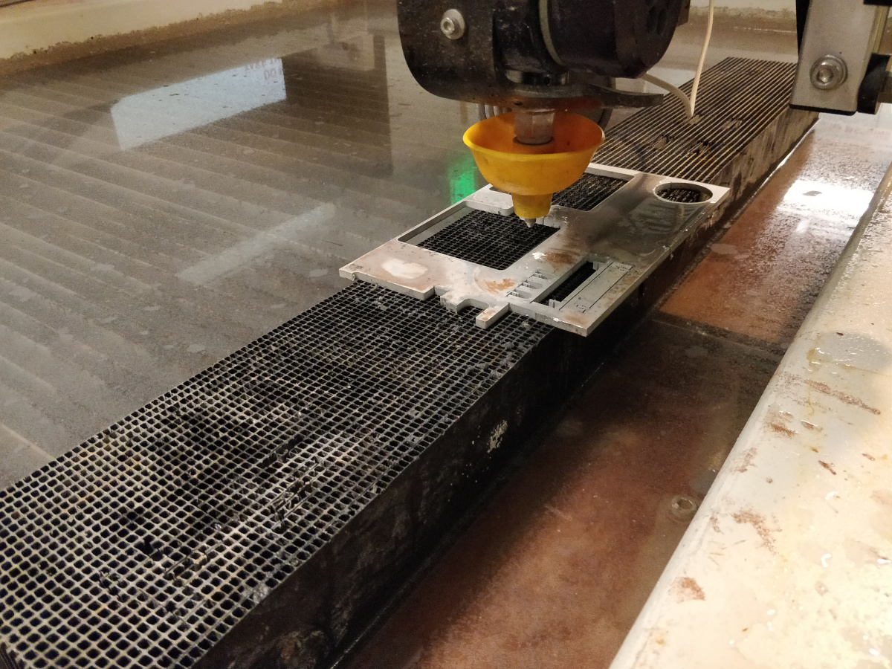
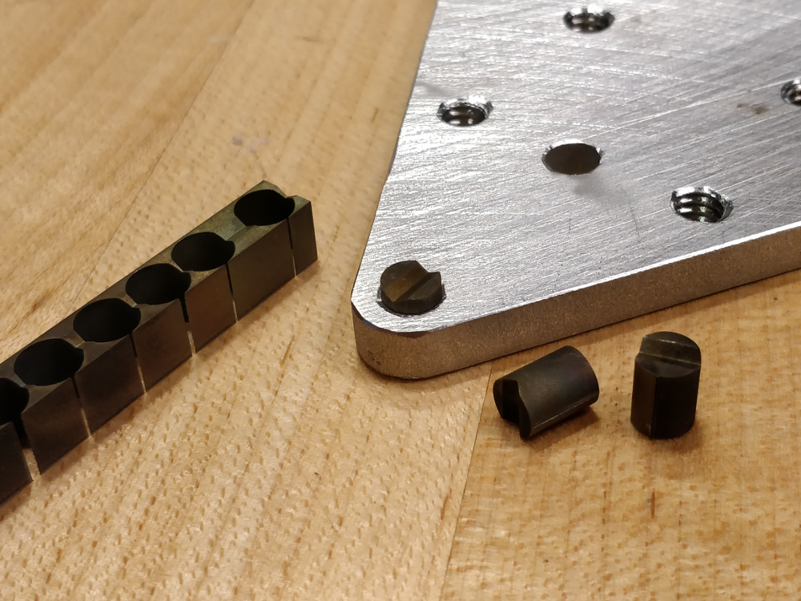
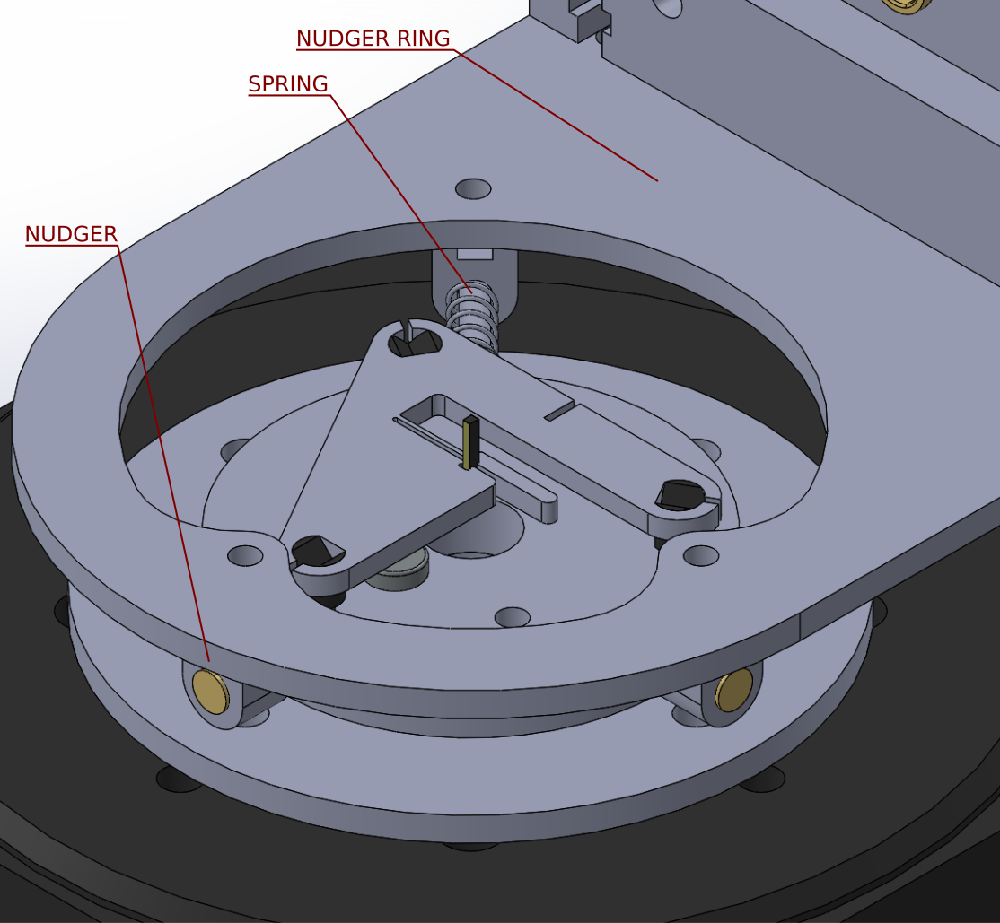
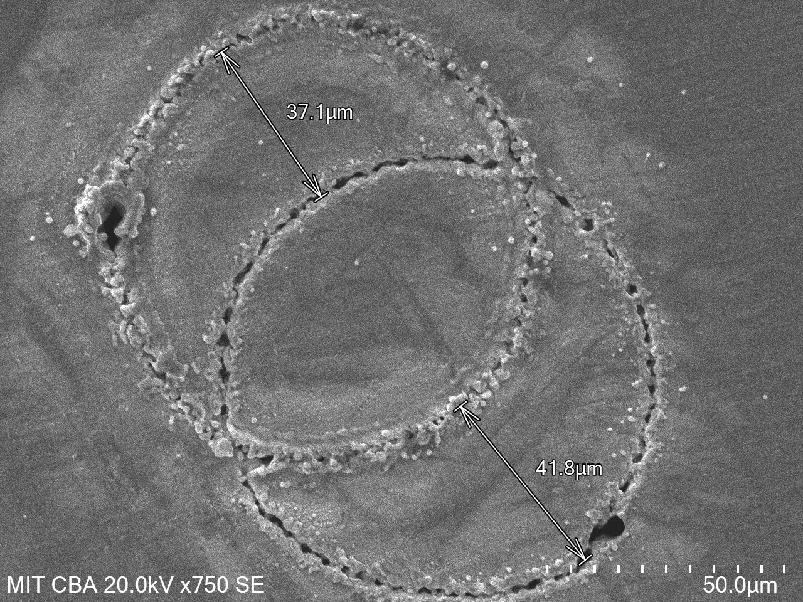
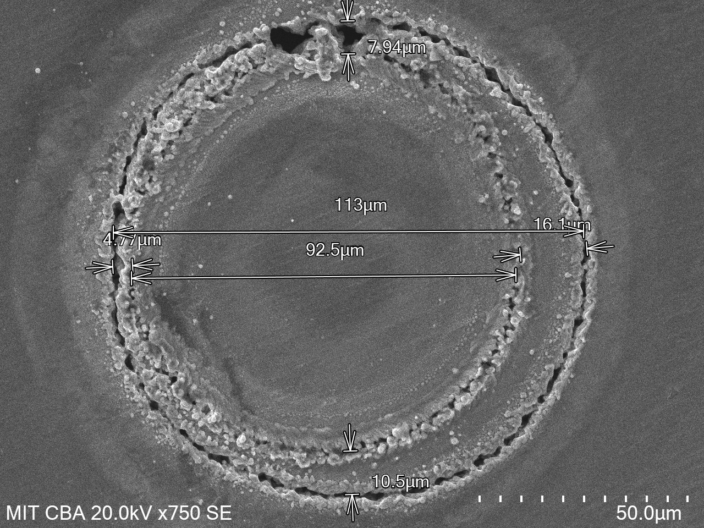

As part of a broader effort to improve the performance of solid-state NMR spectroscopy by fabricating magic-angle-spinning (MAS) rotors out of diamond, I built a precision laser lathe designed to machine both the inner and outer diameter of synthetic diamonds using a nanosecond-pulsed 532 nm laser. You can read the paper here, with some MIT News coverage here; drop me a line if you don't have institutional access to the paper and are curious. The images and renders above show the apparatus mounted in the two machining positions relative to the beam ("lathe mode" and "turntable mode"), while the short clip below shows an earlier version of the design beginning to tangentially machine the outer diameter of a diamond log, as filmed from inside the laser safety enclosure:
The laser is equipped with an inline camera which allows us to monitor the machining operations closely; here is the start of ID machining in turntable mode (the clip is ~7 MB, so it may take a moment to load):
Two critical factors enabled this project: first, I had unrestricted access to precision fabrication and metrology equipment, including a wire-EDM, a waterjet cutter, an SEM, a laser micromaching system, a telecentric measurement instrument, and a micro-CT scanner; and second, this was part of a collaboration between two disparate research groups who each brought a unique perspective and skillset to the table. This write-up focuses on my contributions, but the project extends far beyond what is detailed here!
Design
The laser lathe is really just a collection of adjustable brackets, joined to one another and other objects using bolts or magnetically secured Maxwell kinematic couplings. All of the various elements are shown below in a pair of annotated diagrams for lathe-mode and turntable-mode, respectively:
The core category-defining rotary axis actuator is a commercially available brushless rotary stage made by Thorlabs. Using this stage was a compromise; by accepting the upfront cost and specifications of this component, it meant we wouldn't have to worry about mechanical performance and could focus on alignment and control. Initially, I built a neat folded sheet metal enclosure to house an Odrive-based custom controller:
I ran into some headwinds with the Odrive encoder interface; the Thorlabs stage uses an extremely high resolution encoder which the Odrive's microcontroller couldn't keep up with at higher rotational speeds. Eventually, we bought the recommended Thorlabs controller which has a handy Windows-based USB interface. In both cases, we never tried to integrate the lathe control with the Oxford controller, so the system was always run as a fairly slow lathe, rather than a true 4-axis machine.
The linear lathe axes are "owned" (as in, their repeatability, stiffness, relative orthogonality, etc.) by the host machining center, an Oxford Lasers A-series machine with three micron-accurate axes and a frequency-doubled Nd-YAG 532 nm nanosecond-pulsed source. Within that system, the beam is expanded to 10 mm and delivered to the workpiece using a 100 mm focal length doublet, resulting in a focused diameter (86% of total power) of around 13 microns. At full power, the average output is around 5 W as measured by an onboard thermal power meter.
The first part of the lathe is cut from a 10 mm aluminum plate, and is secured to the Oxford stage using three M3 bolts. This base piece has three press-fit kinematic inserts made from hardened steel which support the rest of the system, along with a magnet to hold the mating part in place. The front insert is on the far end of a double bar flexure, and can be moved using an orthogonal microadjuster:
The M3 clearance holes are cut a bit large so the entire stage can be deliberately canted a few degrees clockwise when mounted to the Oxford, meaning the microadjuster always applies a bit of preload. Note that the gap between the microadjuster sleeve and the bearing surface is large enough to press-fit the sleeve in place during installation, so the sleeve flange ends up on the inside surface. As compared to a previous flexural base which attempted to maintain rotational center, this stage slightly changes the distance between the three kinematic inserts as the microadjuster moves. This means the yaw adjustment introduces a linear offset; this ends up not mattering, since the diamond rod is measured in-situ and re-machined as needed.
Another piece of cut aluminum rests on top of the base piece, and includes another magnet to keep the parts assembled. There are two parts that take turns serving this role, depending on whether the machine is in turntable or lathe mode. For the former:
The kinematic inserts on the base support two kinds of posts on this piece; a hardened dome-head pin from Misumi, and a 250 um/turn micro adjuster with a hardened ball tip from Kozak. For this orientation, two of the supports are micro adjusters so the stage can be leveled relative to both the X and Y axes:
Both the micro adjusters and the pins precisely match up with the kinematic inserts, providing six hardened points of contact. I didn't calculate Hertzian contact stress or try to quantify assembly deflection, and just assumed it would stay the same between assembly cycles:
The rotary stage bolts to four tapped holes on this plate:
The lathe mode base also bolts to the rotary stage. Note this plate has two fixed and one adjustable mount, since one of its angular orientation adjustments is handled by the base yaw adjustment:
A 2.4 mm thick piece of 17-4 stainless steel bolts on to the rotating face of the stage. This material serves as an optical reference during stage alignment, so the stock is factory ground flat and lapped on a granite surface plate using fine-grit paper prior to installation. A piece of cut 6 mm aluminum bolts to the 17-4, and includes three press-fit domed pins and a press-fit magnet. The diamond itself fits in a flexural 17-4 clamp with three hardened double-sided kinematic inserts:
Since 17-4 is ferromagnetic, the diamond clamp doesn't need a matching magnet to keep it secure. The three inserts allow the clamp to be flipped over without disturbing the diamond. Note the diamond log stickout; targeting a 4.6 mm tube from a 6.0 mm log meant we needed at least 5 mm exposed to have enough space to square the end and part off:
Both the aluminum support plate and the 17-4 flat reference plate have holes in the center which allow the laser beam to escape through the rotary stage and hit the lower support plate, which helps avoid overheating the apparatus once the ID hole makes it through the diamond log.
Fabrication
Most of the laser lathe is made out of 3-10 mm 6061 aluminum stock which has been cut using abrasive jet machining:

The kinematic inserts cut from a pre-hardened block of 4140 alloy steel in two steps using wire-EDM:
The inserts are D-shaped to enforce angular orientation, and are cut to the same nominal size as the waterjetted holes in the various aluminum brackets. The kerf angle (what's left of it, since our waterjet cutter has lovely built-in kerf angle correction axes), surface roughness, and relative softness of the cut aluminum surface allows the hard inserts to be securely press-fit using an arbor press. The image below shows an installed insert, two freshly cut inserts, and the blank log from the first wire-EDM operation:

A few other parts get press-fit, including the 1/2" x 1/8" rare earth magnets which in the center of the mounts which hold the assemblies together, and the purchased hardened dome pins that form the non-adjustable contacts opposite various microadjusters. Due to their soft brass sleeve construction, the microadjuster holes are reamed to final diameter and secured using anaerobic adhesive per the manufacturer's directions.
Alignment
The lathe is trammed to the Oxford axes by hanging a Micro-Epsilon laser displacement sensor to the laser's Z-axis carriage using a bit of cut aluminum, and then sweeping along the reference surface and tweaking various micro adjusters as needed. Before doing this, the reference surface is checked for orthogonality versus the rotary axis by spinning the stage and holding the sensor in one place, seen here with an earlier version of the apparatus:
We have a robust collection of thin foils of various thicknesses which we planned to use as shims if we observed a sinusoidal signal from the sensor; fortunately, both the stage mounting surface and the ground 17-4 reference plate itself were flat within a few microns, so we didn't need to add any shims. Next, with the apparatus in lathe mode, we swept the Y-axis and adjusted the base's yaw micro adjuster to within a micron or so. Then we swept the Z-axis and adjusted the lathe base tilt adjustment. After this, we rotated the apparatus into turntable mode and mounted the sensor to another plate so it aimed down, then swept the X and Y axes and adjusted the two turntable mode level micro adjusters.
The final alignment task was to ensure that the diamond clamp allowed the log to be flipped while maintaining concentricity, so the two ID machining operations lined up.



Operation
To use the system, the reversible 17-4 stainless diamond clamp is removed from its kinematic mount and a 1x1x6 mm diamond log is secured using the flexural clamp. These images shows the installation process for an earlier non-reversible iteration of the design (note the diamond log's existing ID machining):